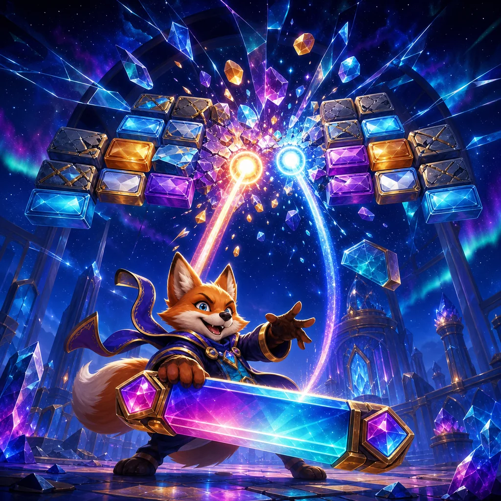

How to play
- Drag the paddle or use Left/Right and A/D.
- Return the orb with the paddle centre for control or edge for a sharper angle.
- Clear every breakable crystal before losing all three orbs.

Charging the prism arena…Control every return angle and shatter the crystal formation before the last orb falls.
0 / 30Track the returning light, move early, and strike with the paddle edge to reach protected lanes. Catch prism powers without abandoning the next return.
Six arcade chapters change the rules with split orbs, sweeping bands, permanent mirrors, advancing crystal walls, gravity and fatal void mines.
Drag the rail. The centred glowing card is selected.
Return the light orb and shatter every breakable crystal.
Drag anywhere across the arena to align the paddle with your finger. Contact near the paddle edge creates a sharper return angle.
Your completed progress is safe. This attempt will restart.
The crystal formation has shattered.